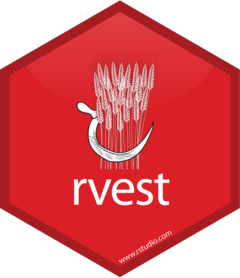

library(readxl)
library(dplyr)
library(tidyr)Web Scraping
IN2039: Data Visualization for Decision Making
Agenda
- HTML Basics
- Web Scraping with the rvest package
- Legal and Ethical Issues with Web Scraping
Load the libraries
Remember to load the R libraries into Google Colab before we start:
HTML Basics
World Wide Web
WWW (or the Web) is the information system where documents (web pages) are identified by Uniform Resource Locators (URLs)
A web page consists of:
HTML provides the basic structure of the web page
CSS controls the look of the web page (optional)
JS is a programming language that can modify the behavior of elements of the web page (optional)
HTML basics
HTML means “HyperText Markup Language” and looks like this
<html>
<head>
<title>Page title</title>
</head>
<body>
<h1 id='first'>A heading</h1>
<p>Some text & <b>some bold text.</b></p>
<img src='myimg.png' width='100' height='100'>
</body>
</html>HTML has a hierarchical structure formed by elements which consist of a start tag (<tag>), optional attributes (id='first'), an end tag1 (like </tag>), and contents (everything in between the start and end tag).
Elements
There are over 100 HTML elements. Some of the most important are:
Every HTML page must be in an
<html>element, and it must have two children:<head>containing document metadata like the page title<body>containing the content you see in the browser.
- Block tags form the overall structure of the page:
- Header 1:
<h1>content</h1> - Paragraph:
<p>content</p> - Ordered list:
<ol>content</ol>
- Header 1:
. . .
- Inline tags that format text inside block tags:
- Bold:
<b>content</b> - Italics:
<i>content</i> - Links:
<a>content</a>
- Bold:
Other elements
| Element | HTML syntax |
|---|---|
| Block | <div>content</div> |
| Inline | <span>content</span> |
| Header 2 | <h2>content</h2> |
| Emphasized text | <em>content</em> |
| Strong importance | <strong>content</strong> |
Contents
Most elements can have content (text or more elements) in between their start and end tags. For example, the following HTML contains paragraph of text, with a word in bold.
<p>Hi! My name is <b>Hadley</b>.</p>The
<p>element is the parent node that contains text and one child element,<b>.The
<b>element wraps the word Hadley and gives it bold formatting.<b>has contents (the text “Hadley”) but no children of its own.
Attributes
Tags can have named attributes which look like name1='value1' name2='value2'.
Two of the most important attributes are id and class, which are used in conjunction with CSS (Cascading Style Sheets) to control the visual appearance of the page.
These are often useful when scraping data off a page.
HTML Syntax

Example 1
Let’s check a Wikipedia page about industrial engineering: https://en.wikipedia.org/wiki/Industrial_engineering

On the Google Chrome webrowser, you see the HTML used for generating the website by right clicking on any blank part of it and select “Inspector”.

A new section of the website appears.

The HTML code is located at the first box.

SelectorGadget
Alternatively, Google Chrome has an extension called SelectorGadget to inspect specific elements of a website.

After installing it, it should be next to your search bar.

Using the gadget, you can inspect specific elements of the website. For example, we can inspect a the selected paragraph in green.

The bar of SelectorGadget identifies that the element is a p because it is a paragraph.
SelectorGadget identifies that the selected element is a header by displaying .mw-heeading2 in its bar.

The bar of SelectorGadget identifies that the element is a p because it is a paragraph.
Web Scraping with the rvest package
What is web scraping?
It is the process of extracting data from the web and transform it into an structured (tidy) dataset.
It allows you to collect data that is displayed on web pages but not directly available for download.

- Common uses include:
- Collecting product or price information
- Gathering research or statistical data
- Monitoring online content changes
- Collecting product or price information
A new library: rvest

rvest allows you to easily scrape (collect) data from web pages.
It helps you extract specific information such as tables, links, and text using simple functions.
rvest is part of the tidyverse.
Load it to Google Colab with the following code.
library(rvest)Example 2
Let’s scrape data on the super bowl results and winners. To this end, we will use the website: https://www.foxsports.com/nfl-super-bowl-winners-and-results

Using rvest, we load the HTML code of the website using the function read_html().
superbowl_website = read_html("https://www.foxsports.com/nfl-super-bowl-winners-and-results")
superbowl_website {html_document}
<html lang="en-US" prefix="og: "http://ogp.me/ns# fb: http://ogp.me/ns/fb#"">
[1] <head>\n<meta http-equiv="Content-Type" content="text/html; charset=UTF-8 ...
[2] <body class="default">\n<div id="__nuxt"><div class="fscom-container layo ...Now, let’s inspect the elements using SelectorGadget

We scrape elements of a website stored in superbowl_website using the function html_elements().
For example, we can retrieve all paragraph elements (<p>content<\p>). To this end, we set the CSS selector to “p”.
sb_web_p = superbowl_website %>%
html_elements(css = "p")
sb_web_p{xml_nodeset (4)}
[1] <p class="subnav-title ff-ffc bold fs-23 lh-25 uc pd-b-10">\n ...
[2] <p class="subnav-title ff-ffc bold fs-23 lh-25 uc pd-b-10">\n ...
[3] <p style="margin-top:10px;">Super Bowl History of each of the Super Bowl ...
[4] <p style="margin-bottom:15px;margin-top:40px;"><span class="fs-18"><&l ...However, the scraped elements are in HTML code.
To turn them into actual text for R, we use the html_text2() function.
superbowl_web_paragraph = sb_web_p %>%
html_text2()
superbowl_web_paragraph[1] "POPULAR SEARCHES"
[2] "BROWSE BY"
[3] "Super Bowl History of each of the Super Bowl winning and losing teams throughout NFL professional football history. The Super Bowl locations, dates and final scores are also included (1967-2024)."
[4] "<< SUPER BOWL PAGE" Now, let’s scrape the table with the superbowl data. To this end, we inspect the object using the SelectorGadget.

In this case, the element is .data-table.
We retrieve the data in the table by setting css = data-table in the html_elements() function.
sb_table_data = superbowl_website %>%
html_elements(css = ".data-table")
sb_table_data{xml_nodeset (2)}
[1] <table class="data-table">\n<thead class="data-header fs-11 ls-pt25"><tr ...
[2] <table class="data-table">\n<thead class="data-header fs-11 ls-pt25"><tr ...Note that we have loaded two tables simultaneously.
Again, the tables are in HTML format. We can turn them into standard R tables using the function html_table().
superbowl_tables = sb_table_data %>% html_table()
superbowl_tables[[1]]
# A tibble: 59 × 4
NO. LOCATION DATE `TEAMS & RESULT`
<chr> <chr> <chr> <chr>
1 I Los Angeles Memorial Coliseum Jan. 15, 1967 Green Bay 35, Kansas City …
2 II Miami Orange Bowl Jan. 14, 1968 Green Bay 33, Oakland 14
3 III Miami Orange Bowl Jan. 12, 1969 New York Jets 16, Baltimor…
4 IV Tulane Stadium Jan. 11, 1970 Kansas City 23, Minnesota 7
5 V Miami Orange Bowl Jan. 17, 1971 Baltimore 16, Dallas 13
6 VI Tulane Stadium Jan. 16, 1972 Dallas 24, Miami 3
7 VII Los Angeles Memorial Coliseum Jan. 14, 1973 Miami 14, Washington 7
8 VIII Rice Stadium Jan. 13, 1974 Miami 24, Minnesota 7
9 IX Tulane Stadium Jan. 12, 1975 Pittsburgh 16, Minnesota 6
10 X Miami Orange Bowl Jan. 18, 1976 Pittsburgh 21, Dallas 17
# ℹ 49 more rows
[[2]]
# A tibble: 20 × 2
TEAM WINS
<chr> <int>
1 New England Patriots 6
2 Pittsburgh Steelers 6
3 Dallas Cowboys 5
4 San Francisco 49ers 5
5 Green Bay Packers 4
6 New York Giants 4
7 Kansas City Chiefs 4
8 Denver Broncos 3
9 Washington Commanders 3
10 Las Vegas Raiders 3
11 Miami Dolphins 2
12 Los Angeles Rams 2
13 Indianapolis Colts 2
14 Baltimore Ravens 2
15 Tampa Bay Buccaneers 2
16 Philadelphia Eagles 2
17 Seattle Seahawks 1
18 Chicago Bears 1
19 New York Jets 1
20 New Orleans Saints 1However, the output superbowl_tables is not a single table, but several objects included in an R list().
A list() in R is a data structure that can store elements of different types, such as numbers, strings, vectors, or even other lists.
It’s the most flexible container in R — unlike vectors or data frames, a list can mix various kinds of data in one object.
To retrieve one table, we select the elements of the resulting list superbowl_tables. For instance, to display the first table we use…
superbowl_tables[[1]] %>% head()# A tibble: 6 × 4
NO. LOCATION DATE `TEAMS & RESULT`
<chr> <chr> <chr> <chr>
1 I Los Angeles Memorial Coliseum Jan. 15, 1967 Green Bay 35, Kansas City 10
2 II Miami Orange Bowl Jan. 14, 1968 Green Bay 33, Oakland 14
3 III Miami Orange Bowl Jan. 12, 1969 New York Jets 16, Baltimore…
4 IV Tulane Stadium Jan. 11, 1970 Kansas City 23, Minnesota 7
5 V Miami Orange Bowl Jan. 17, 1971 Baltimore 16, Dallas 13
6 VI Tulane Stadium Jan. 16, 1972 Dallas 24, Miami 3 To retrieve the second table, we use…
superbowl_tables[[2]] %>% head()# A tibble: 6 × 2
TEAM WINS
<chr> <int>
1 New England Patriots 6
2 Pittsburgh Steelers 6
3 Dallas Cowboys 5
4 San Francisco 49ers 5
5 Green Bay Packers 4
6 New York Giants 4Let’s continue with the table corresponding to the super bowl dates and results.
superbowl_data = superbowl_tables[[1]]
superbowl_data %>% head()# A tibble: 6 × 4
NO. LOCATION DATE `TEAMS & RESULT`
<chr> <chr> <chr> <chr>
1 I Los Angeles Memorial Coliseum Jan. 15, 1967 Green Bay 35, Kansas City 10
2 II Miami Orange Bowl Jan. 14, 1968 Green Bay 33, Oakland 14
3 III Miami Orange Bowl Jan. 12, 1969 New York Jets 16, Baltimore…
4 IV Tulane Stadium Jan. 11, 1970 Kansas City 23, Minnesota 7
5 V Miami Orange Bowl Jan. 17, 1971 Baltimore 16, Dallas 13
6 VI Tulane Stadium Jan. 16, 1972 Dallas 24, Miami 3 Data wrangling
To make the data easier to work, we will create a separate column for year. To this end, we use separate() from tidyr.
superbowl_data_wr = superbowl_data %>%
separate(DATE, into = c("Day", "Year"), sep = ",")
superbowl_data_wr %>% head()# A tibble: 6 × 5
NO. LOCATION Day Year `TEAMS & RESULT`
<chr> <chr> <chr> <chr> <chr>
1 I Los Angeles Memorial Coliseum Jan. 15 " 1967" Green Bay 35, Kansas City…
2 II Miami Orange Bowl Jan. 14 " 1968" Green Bay 33, Oakland 14
3 III Miami Orange Bowl Jan. 12 " 1969" New York Jets 16, Baltimo…
4 IV Tulane Stadium Jan. 11 " 1970" Kansas City 23, Minnesota…
5 V Miami Orange Bowl Jan. 17 " 1971" Baltimore 16, Dallas 13
6 VI Tulane Stadium Jan. 16 " 1972" Dallas 24, Miami 3 Be careful…
The new column Year is character, so we turn it into numeric using the code below.
superbowl_data_wr = superbowl_data_wr %>%
mutate(`Year` = as.numeric(`Year`))
superbowl_data_wr %>% head()# A tibble: 6 × 5
NO. LOCATION Day Year `TEAMS & RESULT`
<chr> <chr> <chr> <dbl> <chr>
1 I Los Angeles Memorial Coliseum Jan. 15 1967 Green Bay 35, Kansas City 10
2 II Miami Orange Bowl Jan. 14 1968 Green Bay 33, Oakland 14
3 III Miami Orange Bowl Jan. 12 1969 New York Jets 16, Baltimore…
4 IV Tulane Stadium Jan. 11 1970 Kansas City 23, Minnesota 7
5 V Miami Orange Bowl Jan. 17 1971 Baltimore 16, Dallas 13
6 VI Tulane Stadium Jan. 16 1972 Dallas 24, Miami 3 Further, let’s separate the column TEAMS & RESULT into two columns “W Team” and “L Team”.
superbowl_data_wr = superbowl_data_wr %>%
separate(`TEAMS & RESULT`, into = c("W Team", "L Team"), sep = ",")
superbowl_data_wr %>% head()# A tibble: 6 × 6
NO. LOCATION Day Year `W Team` `L Team`
<chr> <chr> <chr> <dbl> <chr> <chr>
1 I Los Angeles Memorial Coliseum Jan. 15 1967 Green Bay 35 " Kansas C…
2 II Miami Orange Bowl Jan. 14 1968 Green Bay 33 " Oakland …
3 III Miami Orange Bowl Jan. 12 1969 New York Jets 16 " Baltimor…
4 IV Tulane Stadium Jan. 11 1970 Kansas City 23 " Minnesot…
5 V Miami Orange Bowl Jan. 17 1971 Baltimore 16 " Dallas 1…
6 VI Tulane Stadium Jan. 16 1972 Dallas 24 " Miami 3" After that, we can separate the score of each team into corresponding columns. Note that we must also ensure that the new columns are numeric. All these steps are carried out using the pipeline below.
superbowl_data_final = superbowl_data_wr %>%
separate(`W Team`, into = c("W Team", "W Score"), sep = "(?<=\\D)(?=\\d)") %>%
separate(`L Team`, into = c("L Team", "L Score"), sep = "(?<=\\D)(?=\\d)") %>%
mutate(`W Score` = as.numeric(`W Score`),
`L Score` = as.numeric(`L Score`))The
sep = "(?<=\\D)(?=\\d)"tells R that we want to isolate the numbers into a new column.
The final dataset
superbowl_data_final %>% head(10)# A tibble: 10 × 8
NO. LOCATION Day Year `W Team` `W Score` `L Team` `L Score`
<chr> <chr> <chr> <dbl> <chr> <dbl> <chr> <dbl>
1 I Los Angeles Memorial… Jan.… 1967 "Green … 35 " Kansa… 10
2 II Miami Orange Bowl Jan.… 1968 "Green … 33 " Oakla… 14
3 III Miami Orange Bowl Jan.… 1969 "New Yo… 16 " Balti… 7
4 IV Tulane Stadium Jan.… 1970 "Kansas… 23 " Minne… 7
5 V Miami Orange Bowl Jan.… 1971 "Baltim… 16 " Dalla… 13
6 VI Tulane Stadium Jan.… 1972 "Dallas… 24 " Miami… 3
7 VII Los Angeles Memorial… Jan.… 1973 "Miami " 14 " Washi… 7
8 VIII Rice Stadium Jan.… 1974 "Miami " 24 " Minne… 7
9 IX Tulane Stadium Jan.… 1975 "Pittsb… 16 " Minne… 6
10 X Miami Orange Bowl Jan.… 1976 "Pittsb… 21 " Dalla… 17The web scraping process
So, the web scraping process consists of the following steps:
- Read the HTML page into R with
read_html(). - Extract nodes corresponding to elements of interest with the help of SelectorGadget to identify them and functions like
html_elements(),html_table(),html_node(), among others. - Clean up the extracted fields using functions form stringr, dplyr, and tidyr.
Legal and Ethical Issues with Web Scraping
Robots.txt
When scraping the web you need to be aware of robots.txt.
The robots exclusion standard, also known as the robots exclusion protocol or robots.txt, is a standard used by websites to communicate with web crawlers and other web robots.
The standard specifies how to inform the web robot about which areas of the website should not be processed or scanned.
See more at Wikipedia.
Essentially, …
A website places a plain-text file named robots.txt at the root of its domain (e.g., https://example.com/robots.txt).
This file contains rules that tell bots which pages or directories they are allowed to crawl (Allow:) and which ones they should not (Disallow:).
It does not enforce security—well-written bots respect the rules, but malicious bots may ignore them.
robots.txt of wikipedia.com and foxsports.com


The robotstxt package
To check if scraping/crawling a specific website is allowed, we use the R package called robotstxt. Let’s load it into R.
library(robotstxt). . .
The package has a function called paths_allowed() that tells you whether a website can be scraped or not.
. . .
For instance, let’s confirm that we can scrape the website https://www.foxsports.com/nfl-super-bowl-winners-and-results
paths_allowed("https://www.foxsports.com/nfl-super-bowl-winners-and-results")[1] TRUEWhen to scrape data form a website?
- If the output of
paths_allowed()isTRUE, then we “can” scrape data from this website. - If the output of
paths_allowed()isFALSE, then we cannot scrape data from this website!
What abut the industrial engineering Wikipedia site?
paths_allowed("https://en.wikipedia.org/wiki/Industrial_engineering")[1] TRUEThe output is TRUE, so we are “good” to scrape it.
Final comments
A misconception about web data is that if the data is publicly available, it can be scraped.
Even if
paths_allowed() = TRUE, we must consider the privacy and consent when the data is about human subjects, because it may include sensitive information. For more information, reach the Institutional Research Ethics Committee.
- Another thing to consider is the legal aspect of web scraping. Always review the website’s terms of service before collecting data. For example, review the Wikipedia Terms of Use and the Fox Sports Terms of Use
. . .
- Scraping without permission can violate intellectual property rights or privacy regulations, depending on the jurisdiction
Comments
HTML files have the extension .html.
They are rendered using a web browser via an URL.
More information on HTML elements can be found in MDN Web Docs, which are produced by Mozilla, the company that makes the Firefox web browser.